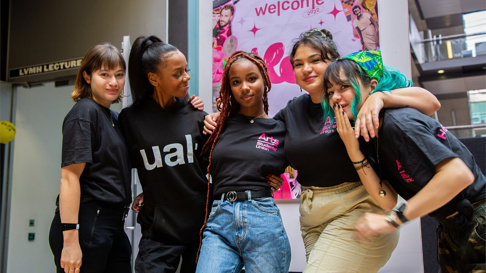

Систематизировать актуальные практики ведущих дизайн-школ и арт-институций. Мы анализируем программы UAL, RCA, RISD и других институций, выделяя ключевые методологии и педагогические подходы.
Сделать научные публикации более публичными Существует гэп между работами людей в академии и практикующими специалистами. Индекс создан для того чтобы сократить этот разрыв
Создать сообщество людей неравнодушных к хорошему дизайну и искусству. Сейф-спейс для дизайн-нердов.